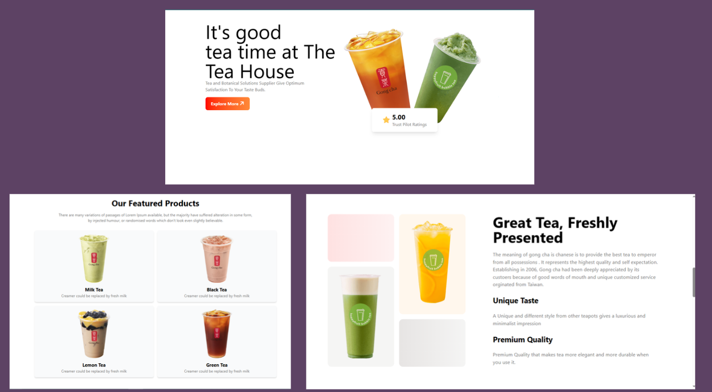
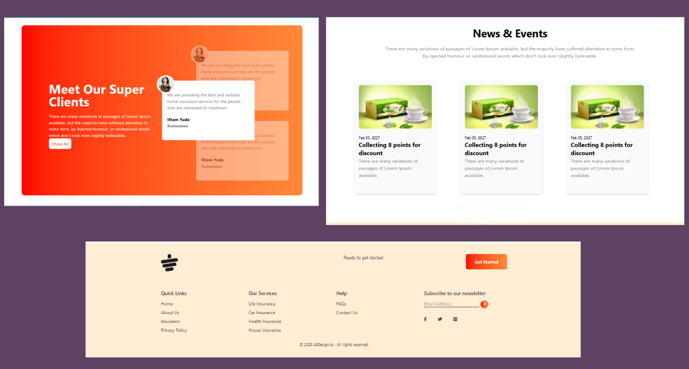
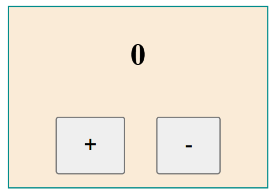
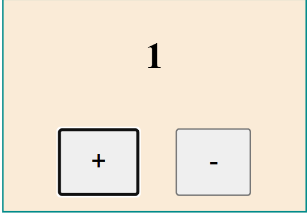
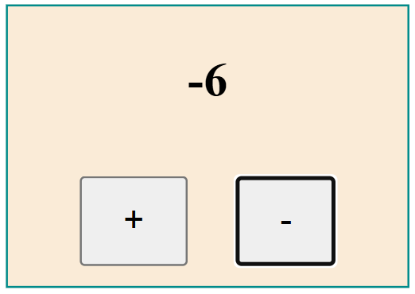

01
A DBMS-based web application developed for buying and selling handmade products. Users can sign up and log in to their accounts, add items to the cart, place orders, and download purchase receipts. All user information and order data are stored in a MySQL database. An admin panel is also implemented where the admin can add, edit, and delete products from the marketplace.
02
A simple frontend web project built using Tailwind CSS, HTML. The project focuses on designing responsive user interfaces using modern utility-first CSS styling.


03
An Object-Oriented Programming (OOP) based desktop application developed using Java Swing. This Digital Notebook allows users to create, edit, save, and manage notes easily through a simple graphical user interface.
04
A simple web project developed using HTML, CSS, and JavaScript to demonstrate DOM manipulation. The project dynamically updates webpage elements, handles user interactions, and modifies content in real time using JavaScript.


